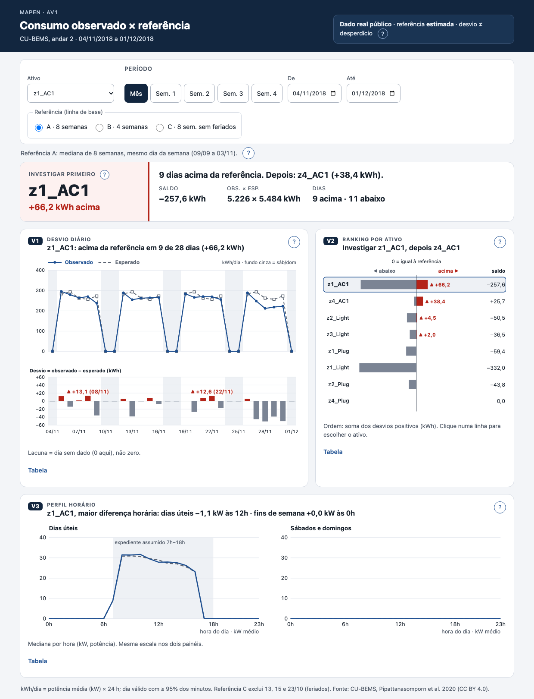

H
V1
V2
V3
F
H número dominante (ativo a investigar primeiro) · F filtros: ativo, período, referência A/B/C · V1 desvio diário (P1: quando o consumo se afastou da referência) · V2 ranking por ativo (P2: onde investigar primeiro) · V3 perfil horário (P3: o padrão acompanha o funcionamento; dia útil × fim de semana). Mesmos IDs da matriz de racionalização.